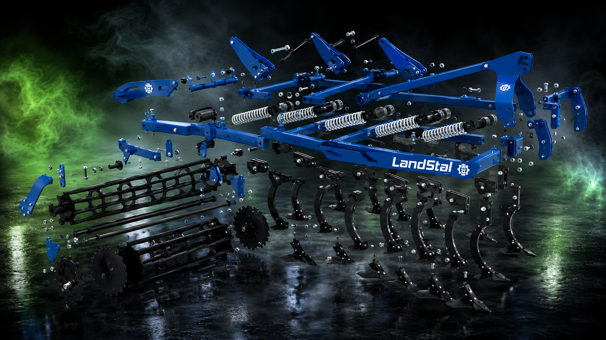

Podmítač
3 m s ochranou APB
Univerzální podmítač pro přípravu půdy, práci po sklizni a intenzivní promíchání profilu. Pružinová ochrana APB pomáhá chránit pracovní orgány v náročných podmínkách.
pracovní šířka 3.0 m
pružinová ochrana APB
zadní válec

Scroll visual
APB rozložený na pracovní celky
Posouvejte stránku dolů. Kompletní podmítač se plynule promění v explozní pohled na rám, pružinové jištění, radličky, diskové sekce, šroubové spoje a zadní válec.

Rám
APB pružiny
Radličky
Válec
Video
APB v pohybu
Video je vložené lokálně a zůstává součástí webové složky.
Proč APB
Spolehlivá podmítka i v těžších podmínkách
Pružinové jištění APB pomáhá stroji pracovat stabilně i tam, kde jsou v půdě překážky nebo tvrdší vrstvy. Stroj doporučíme podle traktoru, půdy a požadované intenzity zpracování.